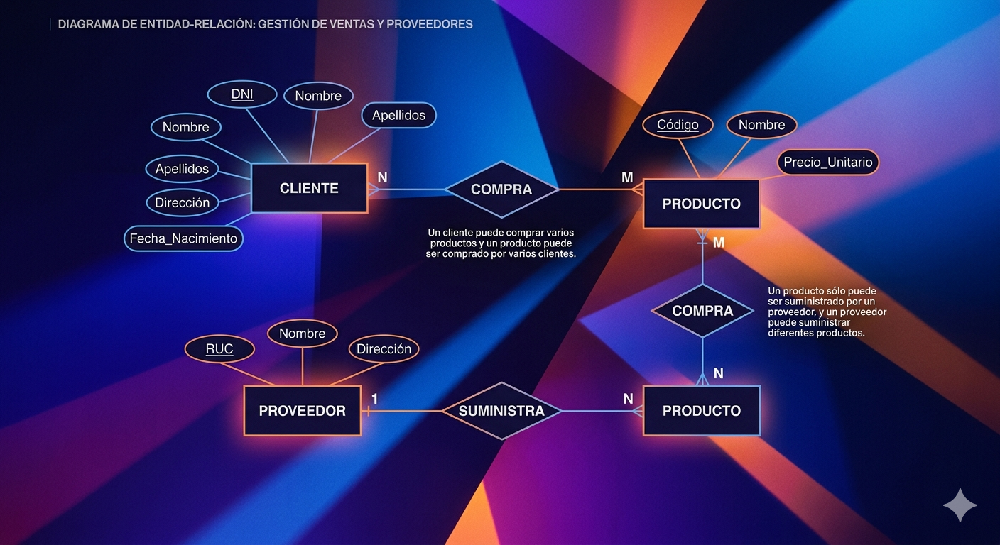
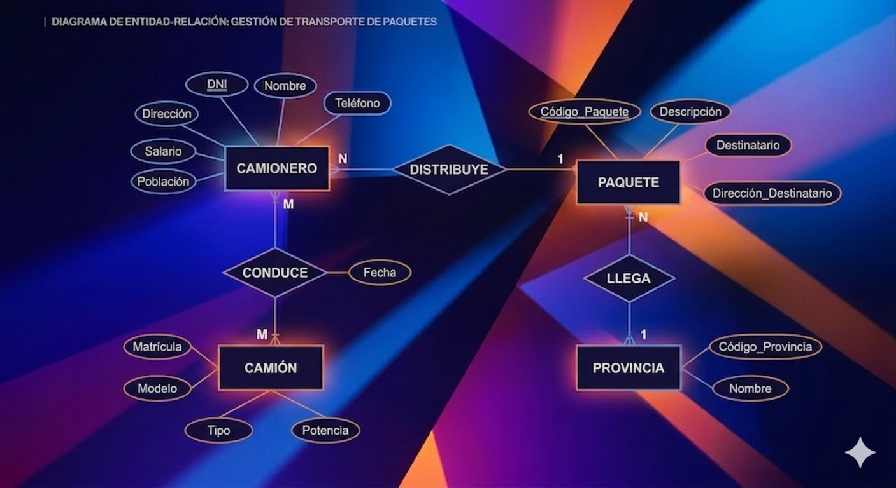

Ejercicios de Modelos Relacionales
En esta sección se presentan ejercicios prácticos sobre el modelado entidad-relación
y su transformación al modelo relacional, aplicando los conceptos fundamentales
de diseño de bases de datos.
Ejercicio 1
"Una empresa vende productos a varios clientes.
Se necesita conocer los datos personales de los
clientes (nombre, apellidos, dni, dirección y
fecha de nacimiento). Cada producto tiene un nombre
y un código, así como un precio unitario. Un cliente
puede comprar varios productos a la empresa, y un mismo
producto puede ser comprado por varios clientes.
Los productos son suministrados por diferentes proveedores.
Se debe tener en cuenta que un producto sólo puede ser
suministrado por un proveedor, y que un proveedor puede
suministrar diferentes productos. De cada proveedor se desea
conocer el RUC, nombre y dirección."

Ejercicio 2
Se desea informatizar la gestión de una empresa de transportes
que reparte paquetes por toda España. Los encargados de llevar
los paquetes son los camioneros, de los que se quiere guardar
el dni, nombre, teléfono, dirección, salario y población en la
que vive.
De los paquetes transportados interesa conocer el código de
paquete, descripción, destinatario y dirección del destinatario.
Un camionero distribuye muchos paquetes, y un paquete sólo
puede ser distribuido por un camionero.
De las provincias a las que llegan los paquetes interesa
guardar el código de provincia y el nombre. Un paquete
sólo puede llegar a una provincia. Sin embargo, a una provincia
pueden llegar varios paquetes. De los camiones que llevan los
camiones, interesa conocer la matrícula, modelo, tipo y
potencia. Un camionero puede conducir diferentes camiones
en fechas diferentes, y un camión puede ser conducido por
varios camioneros”.
